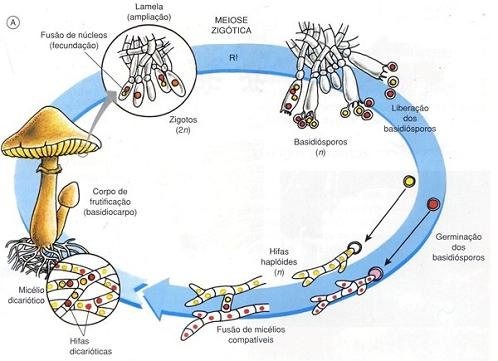

Reprodução dos Fungos
Os fungos são organismos aclorofilados, eucariontes e heterotróficos, bem diferentes de animais e vegetais, que, juntamente com as bactérias, são os principais “lixeiros” da natureza, pois por decomporem matéria orgânica, não deixam acumular lixo orgânico, além de propiciarem a reciclagem de nutrientes no ambiente.
A reprodução assexuada nos fungos pode ocorrer de três maneiras, por fragmentação, brotamento e esporulação.
A fragmentação é um tipo de reprodução assexuada muito simples que ocorre em certas espécies de fungos. Nesse tipo de reprodução, o micélio (conjunto de hifas) se quebra, graças a fatores bióticos ou abióticos, dando origem a clones.
O brotamento, também chamado de gemulação, é outro tipo de reprodução assexuada que ocorre em fungos, como o Saccharomyces cerevisae. No brotamento, o fungo adulto emite brotos ou gemas laterais que se desenvolvem e podem ou não se separar da célula original.
A esporulação é um tipo de reprodução assexuada realizada por diversas espécies de fungos, como o Rhizopus. Na esporulação, os fungos possuem estruturas chamadas de esporangióforos, que nada mais são do que hifas especiais que saem de determinados pontos do micélio. Na extremidade de cada esporangióforo, encontramos o local onde são produzidos os esporos, que é chamado de esporângio. Quando os esporos estão maduros, o esporângio adquire coloração escura e se quebra, liberando os esporos no ambiente. Os esporos são células haploides de paredes resistentes que, por serem muito leves, são disseminados pelo ambiente através do vento, água, animais, homem etc. Quando esse esporo encontra um local com condições ambientais favoráveis, ele se desenvolve, originando um novo micélio.